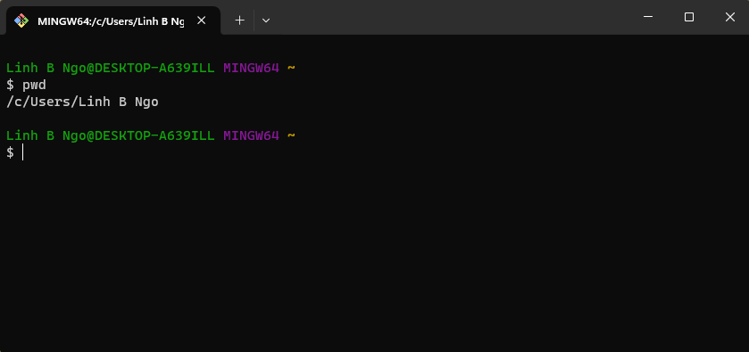
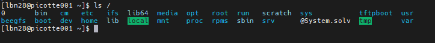
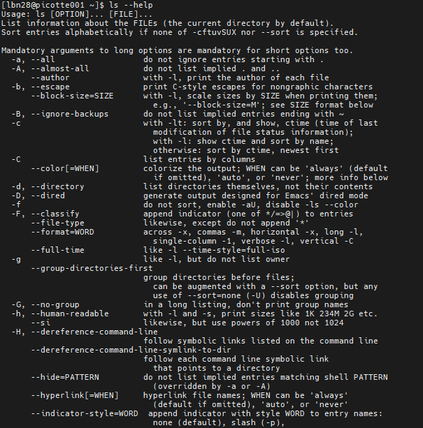

Navigating Files and Directories
Navigating Files and Directories#
1. Files and Directories
File System: an Operating System component responsible for managing files and directories.
Perspective:
On a GUI, you click to move from one place to another, so you are outside the file system space looking in.
On a CLI, you need to explicitly provide direction (path) for the command to know with which file/directory it is supposed to interact. The perspective is more inside the file system space.
2. Where are we, what do we have here, and how do we go somewhere else?
Three basic commands:
pwd,ls,cdpwdreturns the absolute path to the current working directory (i.e.: where you are when you are in the terminal).
pwd

lsreturns the list of current files and directories in the target directory.
ls /

There are many options available for different commands. To view the documentation, run the followings:
ls --help

Run
lsby itself will list the contents of the current directory.
ls
cdallows users to change the current directory (outcome ofpwd) to the target directory.Run
man cdorcd --helpto read the documentation forcd.The generate syntax for
cdiscd DESTINATIONwithDESTINATIONcan either be absolute or relative paths or special paths.
Change to root directory and view contents of root:
cd /
ls
Special paths:
~: home direcrory.: current directory..: a directory that is one level above the current directory
Change to your home directory using the special path
Check the content of your home directory to confirm that you have the
shell-lesson-datadirectory.Change into
shell-lesson-datadirectory and view the contents of this directory
cd ~
ls Desktop/
cd Desktop/shell-lesson-data
ls
3. Challenge: exploring more ls flags
You can also use two options at the same time. What does the command
lsdo when used with the-loption? What about if you use both the-land the-hoption?Some of its output is about properties that we do not cover in this lesson (such as file permissions and ownership), but the rest should be useful nevertheless.
Solution
The
-loption makeslsuse a long listing format, showing not only the file/directory names but also additional information, such as the file size and the time of its last modification.If you use both the
-hoption and the-loption, this makes the file size human readable, i.e. displaying something like 5.3K instead of 5369.
4. Challenge: Listing in reverse chronological order
By default, ls lists the contents of a directory in alphabetical order by name. The command ls
-tlists items by time of last change instead of alphabetically. The command ls-rlists the contents of a directory in reverse order.Which file is displayed last when you combine the
-tand-roptions? Hint: You may need to use the -l option to see the last changed dates.
Solution
The most recently changed file is listed last when using -rt.
This can be very useful for finding your most recent edits or
checking to see if a new output file was written.
5. Challenge: ls Reading comprehension
Using the filesystem diagram below.
If
pwddisplays/Users/backupand-rtellslsto display things in reverse order, what command(s) will result in the following output:
pnas_sub/ pnas_final/ original/

ls pwdls -r -Fls -r -F /Users/backup
Solution
No:
pwdis not the name of a directory.Yes:
lswithout directory argument lists files and directories in the current directory.Yes: uses the absolute path explicitly.
6. General syntax of a shell command

lsis the command, with an option-Fand an argument/.Option:
either start with a single dash (
-) or two dashes (--),change the behavior of a command.
can be referred to as either
switchesorflags.
Arguments tell the command what to operate on (e.g. files and directories).
Sometimes
optionsandargumentsare referred to as parameters.The shell is in fact just a process/function and these
optionsandargumentsare being passed as parameters to the shell’s function that is responsible for executing the command.
A command can be called with more than one option and more than one argument, but a command doesn’t always require an argument or an option.
Each part is separated by spaces: if you omit the space between
lsand-Fthe shell will look for a command calledls-F, which doesn’t exist.Capitalization can be important.
ls -swill display the size of files and directories alongside the namesls -Swill sort the files and directories by size